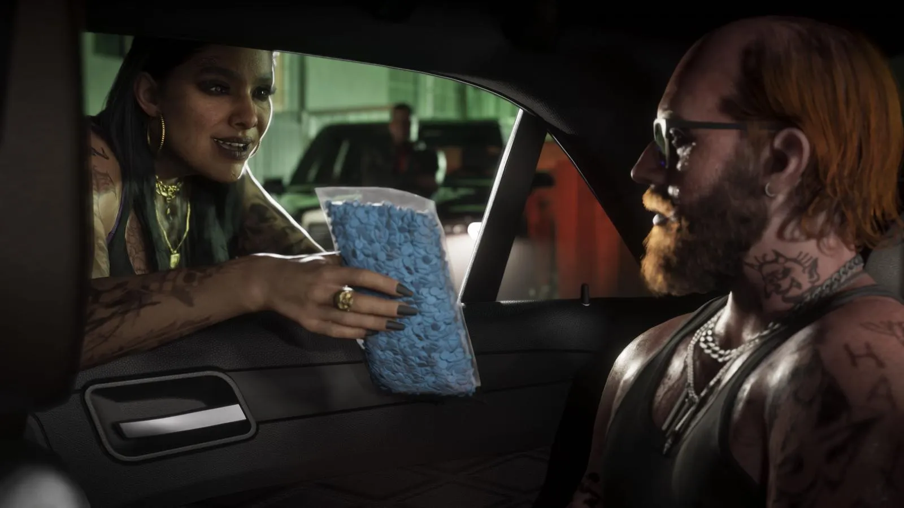
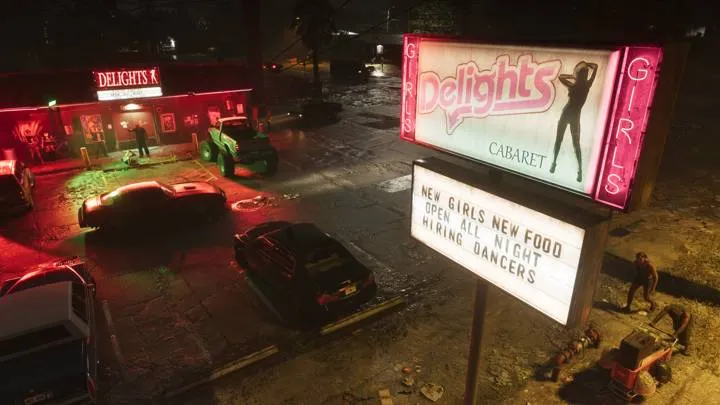
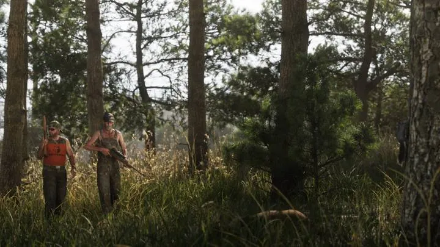
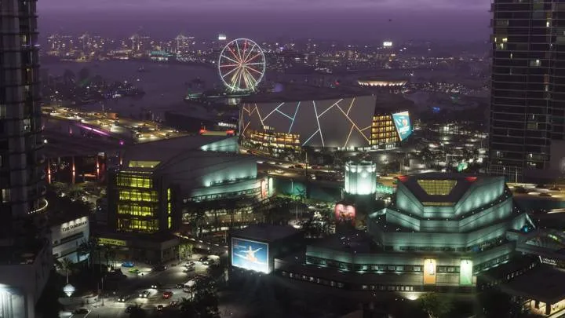
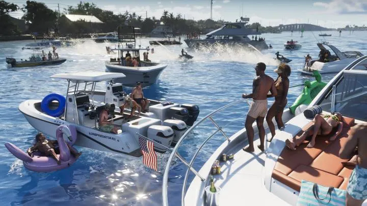
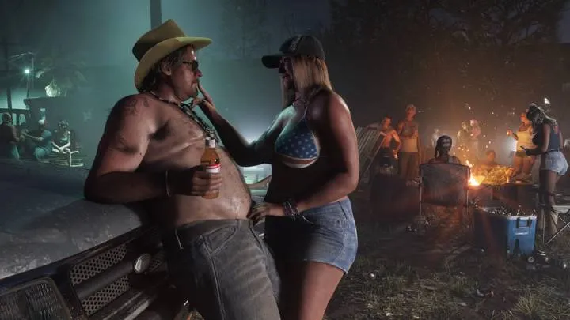
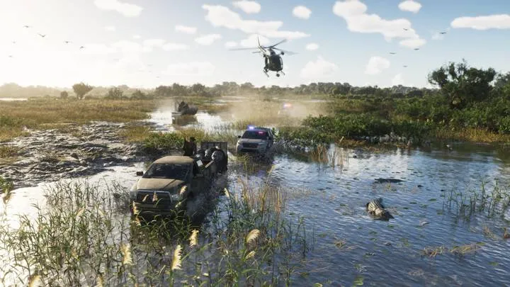

Побочные миссии GTA 6: все персонажи и задания
Опубликовано:

- Побочные цепочки выдают 12 персонажей — около 40 заданий (список Push Square).
- Для 100% нужно 100 необязательных заданий, для трофея Strangers & Freaks — 8 пройденных цепочек.
- Не пропустите: задания Ширли есть только в главе 1, гонка с Яго ограничена по времени.
- На карте побочные задания — фиолетовые значки и чёрные с розовой буквой.
Все персонажи и задания
| Персонаж | Задания | Что важно знать |
|---|---|---|
| Энди (Andy) | Climbing the Cellerichain · Pay the Cellerica Fee · Peach! · Read the Label · Puff Puff Pass | Знакомство — ещё в главе 1: Энди звонит с неизвестного номера и отдаёт одежду для Лусии в баре Manatee’s Rest. Финал цепочки — скрытый трофей Road to Rehabilitation. |
| Билли (Billy) | Thrillbillies · Twist Wrist, Smash, Grab · Mall Rats · The Impaler · Hometown Heroes | Первые два задания Push Square относит ко второй главе. Финал — скрытый трофей The Lone Rider. |
| Брет Фогель (Bret Vogel) | Veteran Hunted | Охота — только за Джейсона. 15 «колод мишеней» нужны для 100%: винтовка Killtelligence SM-69 из шкафчика любого Ammu-Nation, выстрел в голову или сердце. Уникальный зверь — скрытый трофей Fair Game. |
| Эдди Акоста (Eddie Acosta) | Attend Eddie Acosta’s Party | — |
| Кентон Рис (Kenton) | Maritime Disputes | Сокровища затонувших кораблей: фиолетовые сундуки, металлоискатель, 7 наборов (5 — для 100%, все 7 — для 33 подводных находок). Знакомство — в миссии Island Dreams. Финал — трофей This Was No Boat Accident. |
| Кайл (Kyle) | Check Out McKittrick Farm · Collect Chemicals · Buddy? | Кукурузник, «химикаты» и мутантная клубника. Флаер — на ресепшене мотеля Starlet. |
| Кирк (Kirk) | Skunk Apeology 101 · Advanced Skunk Apeonomics | Skunk Ape — флоридское имя Бигфута, который в GTA 6 и правда живёт в болотах (см. пасхалки). |
| Рэнди (Randy) | ¡Dale Mamba! | Тот самый Рэнди со списком из ~20 дорогих машин (все места — в статье Все машины GTA 6). Финал — скрытый трофей Supply & Demand. |
| Папа Одасити (Papa Audacity) | The Unknown Stuntman · Trial by Tire · Quit Your Job, Sell Your House · AudaCity Stunts · Catching a Whale · The Audacity | Цепочка про трюки — пригодится для 250 трюков (трофей Cunning Stunts). В финале можно заработать около $25 000 на монете DacityCoin. |
| Фредди (Freddie) | Retest Freddie’s Defenses | Выживальщик с бункером у озера Леонида, на карте не отмечен. Задание открывает ураганы. |
| Пилот Пит (Pilot Pete) | Passing the Torch · Backseat Pilot · Hostile Takeover · Stormy Weather · Over and Out | Знакомство — в миссии Clear Skies: Джейсон прикрывает его самолёт от радаров. |
| Ширли (Shirley) | Get Shirley’s Rum · Steal the Scooter | Только в главе 1 — пропадают с началом миссии Tourist Trap. |
| Ясмани (Yasmani) | Yasmani’s Jewelry Jobs · That’s Where The Money Is… | Скупщик из главы 3: три ювелирных магазина (коды сейфов — на странице главы 3), в главе 4 — ограбление инкассаторов на ~$80 000. |
| Тайрон (Tyrone) | Take Out Kitty Litter | Скупщик из главы 3; его «синтетические лаборатории» засчитываются в побочные задания для 100%. Финал — скрытый трофей Spin On This! |
| Яго (Yago) | Join a Street Race · Bumper to Bumper · Race Against Yago · Brother to Brother | Уличные гонки. Race Against Yago ограничена по времени — не откладывайте. |
Для 100% и трофеев
- 100 необязательных заданий — пункт чек-листа 100%. Считаются не только цепочки персонажей, но и доставки машин, лаборатории Тайрона, рыбалка с Кэлом, медитации.
- Strangers & Freaks (серебро) — пройти 8 цепочек «чудаков» по всей Леониде.
- Скрытые трофеи за финалы цепочек: Энди, Кентон, Билли, Рэнди, Тайрон и охота у Брета.
- В главе 1 есть ещё и необязательные сюжетные задания — подарки Лусии, банк, потерянный груз.
Советы
- Берите задания по ходу. Побочные цепочки можно пройти и после финала, но часть привязана к главам.
- Перед точкой невозврата главы 1 закончите дела Ширли и Кентона — после миссии Recalibration они на время или навсегда исчезнут.
- Трюки и гонки совмещайте с цепочками Papa Audacity и Яго — так быстрее набирается 250 трюков и 20 побед в гонках.
Подробные прохождения по персонажам
По шагам, с кодами сейфов и выборами. В трофей Strangers & Freaks, по данным гайдов, засчитываются Кирк, Кайл, Яго, Пилот Пит, Папа Одасити, доктор Мерл и Фредди. Это семь, а нужно восемь; EGW называет восьмым персонажа Алвана, другие гайды его пока не подтверждают. Задания Ширли, Билли, Энди, Ясмани, Тайрона, Эдди, Кентона и охота Брета не засчитываются, но у многих из них свои трофеи. Совет: проверяйте счётчик трофея до и после последнего задания каждой цепочки.













Остальные цепочки добавим, как только появятся проверенные прохождения.
Частые вопросы
Сколько побочных миссий в GTA 6?
По списку Push Square — 12 персонажей и около 40 заданий. Для 100% нужно 100 «необязательных заданий» — туда входят и они, и доставки машин, лаборатории, рыбалка, медитации.
Какие побочные задания можно пропустить?
Задания Ширли доступны только в главе 1, а гонка Race Against Yago ограничена по времени.
Что дают побочные миссии?
Финалы цепочек дают скрытые трофеи, а 8 пройденных цепочек — трофей Strangers & Freaks.
Источники: Push Square, «GTA 6: Chapters & Story Missions» (раздел о побочных миссиях), 19.11.2026; GTABase, «GTA 6 100% Completion Guide», 19.11.2026; Of Zen and Computing и TechWiser (трофеи), 19.11.2026; PowerPyx, «Get Lucia’s Clothes», «Island Dreams», «Clear Skies», «Tourist Trap», «GTA 6 Money Guide», 19.11.2026.